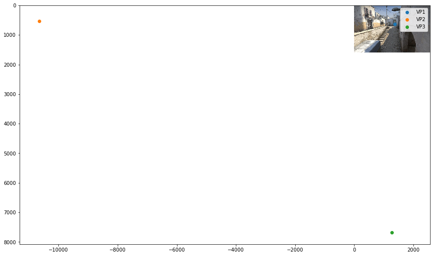
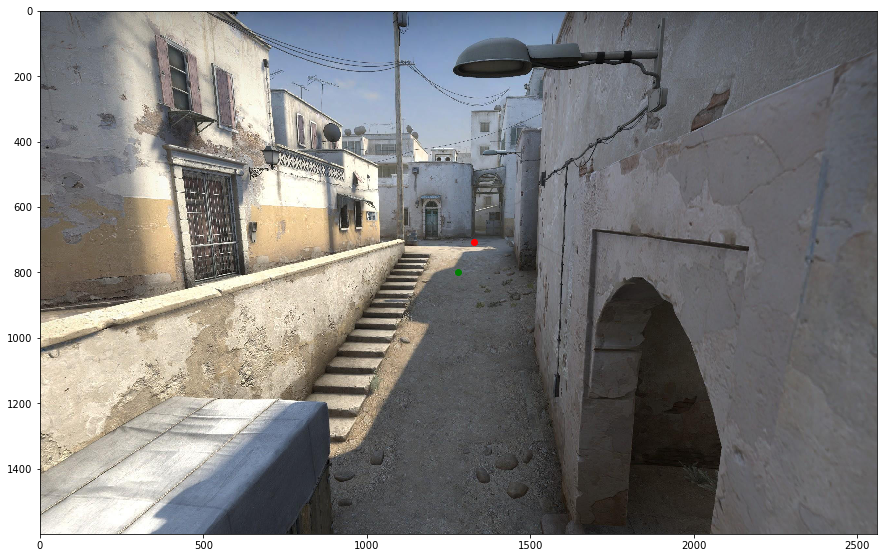

from PIL import Image
import matplotlib.pyplot as plt
import numpy as np
import scipy.linalg
np.set_printoptions(precision=3)
plt.rcParams['figure.figsize'] = [15, 15]img = Image.open('data/2020-04-10-Finding-Vanishing-Points/csgo-dust2-mid.jpeg')
plt.imshow(img)
plt.show()vanishing_points = {'VP1': [1371.892, 630.421],
'VP2': [-10651.54 , 536.681],
'VP3': [1272.225, 7683.02 ]}plt.imshow(img)
for point_name in ['VP1','VP2','VP3']:
vp = vanishing_points[point_name]
plt.scatter(vp[0],vp[1],label=point_name)
plt.legend()
plt.show()
Ok, so we now have three different vanishing points. Using these, let’s try and use them to gain some insights into the cameras’ relationship with the scene.
Hartley & Zisserman put it best, “Vanishing points are images of points at infinity, and provide orientation (attitude) in- formation in a similar manner to that provided by the fixed stars.”
Hartley & Zisserman also provide an algorithm (Example 8.27, page 226) to extract the camera calibration matrix K from 3 mutually orthogonal vanishing points.
Let’s go and implement it in practice.
Some algebra
H&Z propose a matrix \(\omega\) (omega), which captures the following relationship between the different vanishing points.
\(v^T_i \omega v_j = 0\)
Where:
\(\omega = \begin{bmatrix} w_1 & 0 & w_2\\ 0 & w_1 & w_3\\ w_2 & w_3 & w_4 \end{bmatrix}\)
And:
$ v_j = \[\begin{bmatrix} x_1\\ y_1\\ 1 \end{bmatrix}\]$
\(v_i = \begin{bmatrix} x_2 \\ y_2 \\ 1 \end{bmatrix}\)
If we can find this matrix \(\omega\), then we can find the camera calibration matrix if we make some assumptions:
- Zero Skew
- Square Pixels
From H&Z, we have: “K is obtained from \(\omega\) by Cholesky factorization of omega, followed by inversion.”
For good practice, we can also normalize the matrix so that the lower right value \(K_{22}\) is 1. In python:
K = np.linalg.inv(np.linalg.cholesky(omega)).T
K/=K[2,2]Working backwards, we are faced with the task of finding \(\omega\)
Multiplying through, we find that:
$ v^T_i v_j = x_2(w_1 x_1 + w_2) + y_2(w_1 y_1 + w_3) + w_2 x_1 + w_3 y_1 + w_4$
Factorising:
$ v^T_i v_j= w_1(x_2 x_1 + y_2 y_1) + w_2(x_2 + x_1) + w_3(y_2 + y_1) + w_4$
Great, we can now find all the coefficients we need for our matrix from each pair of vanishing points.
We have three pairs of vanishing points: 1. 1 & 2 2. 2 & 3 3. 3 & 1
From each pair we can find a new set of values for \(w_1\) to \(w_4\).
Stacking them all on top of each other, we end up with the matrix \(A\).
\(A = \begin{bmatrix} w_{11} & w_{12} & w_{13} & w_{14}\\ w_{21} & w_{22} & w_{23} & w_{24}\\ w_{31} & w_{32} & w_{33} & w_{34} \end{bmatrix}\)
In Python:
def generate_A(vanishing_points):
A = []
for (point_name_1, point_name_2) in [('VP1','VP2'),('VP2','VP3'),('VP3','VP1')]:
vp1 = vanishing_points[point_name_1]
vp2 = vanishing_points[point_name_2]
x1,y1 = vp1
x2,y2 = vp2
w1 = x2*x1 + y2*y1
w2 = x2 + x1
w3 = y2 + y1
w4 = 1
A.append([w1,w2,w3,w4])
A = np.array(A)
return(A)def generate_A(vanishing_points):
A = []
for (point_name_1, point_name_2) in [('VP1','VP2'),('VP2','VP3'),('VP3','VP1')]:
vp1 = vanishing_points[point_name_1]
vp2 = vanishing_points[point_name_2]
x1,y1 = vp1
x2,y2 = vp2
w1 = x2*x1 + y2*y1
w2 = x2 + x1
w3 = y2 + y1
w4 = 1
A.append([w1,w2,w3,w4])
A = np.array(A)
return(A)
def compute_K(A):
w = scipy.linalg.null_space(A).ravel()
w1 = w[0]
w2 = w[1]
w3 = w[2]
w4 = w[3]
omega = np.array([[w1,0,w2],
[0,w1,w3],
[w2,w3,w4]])
K = np.linalg.inv(np.linalg.cholesky(omega)).T
K/=K[2,2]
return(K)
A = generate_A(vanishing_points)
K = compute_K(A)print(K)[[7.276e+02 0.000e+00 1.327e+03]
[6.236e-14 7.276e+02 7.060e+02]
[1.218e-16 0.000e+00 1.000e+00]]The Calibration Matrix
So now we have the calibration matrix \(K\), which gives us three separate pieces of information.
- The Focal length in pixels: \(K_{11}\) or \(K_{22}\) (728)
- The x coordinate of the camera optical centre: \(K_{13}\) (1327)
- The y coordinate of the camera optical centre \(K_{23}\) (706)
\(K = \begin{bmatrix} 728 & 0 & 1327\\ 0 & 728 & 706\\ 0 & 0 & 1 \end{bmatrix}\)
plt.scatter(2560/2.0,1600/2.0,color='G')
plt.scatter(K[0,2],K[1,2],color='R')
plt.imshow(img)
plt.show()